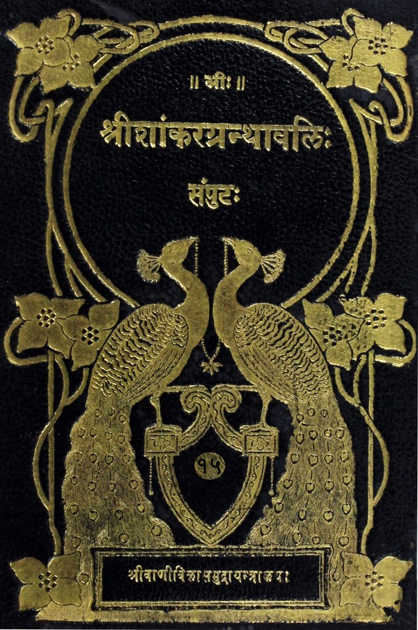

श्रीशांकरग्रन्थावलिः
संपुटः १ - २०
Home
About
Concluding Note
T. K. Balasubramaniam
Superhuman efforts of a savant
Prema Nandakumar
Views on the Sri Vani Vilas Press
His (Sri TKB’s) aim
Volumes
अपरोक्षानुभूतिः
वाक्यवृत्तिः
स्वात्मनिरूपणम्
आत्मबोधः
शतश्लोकी
दशश्लोकी
सर्ववेदान्तसिद्धान्तसारसंग्रहः
मङ्गलाचरणम्
अनुबन्धचतुष्टयम्
साधनचतुष्टयम्
नित्यानित्यवस्तुविवेकः
विषयदोषप्रदर्शनपूर्वकविरक्तिः
कामदोषाः
कामविजयसाधनानि
धनदोषाः
वैराग्यफलम्
शमादिसाधनानि शमत्रैविध्यं च
शमस्य साधनानि
ब्रह्मचर्यादिमनःप्रसादसाधनानि
दमः
तितिक्षा
सपरिकरः संन्यासः
श्रद्धा
समाधानम्
मुमुक्षुत्वम्
मुमुक्षायाश्चातुर्विध्यं तल्लक्षणं च
तीव्रादिमुमुक्षाफलम्
मुमुक्षाया आवश्यकत्वम्
मुमुक्षावृद्धिकारणानि
साधनचतुष्टयसंपन्नस्य गुरूपसदनम्
गुरुलक्षणपूर्वकमहिमा
गुरुप्रसादसंपादनप्रकारः
गुरुलाभप्रशंसापूर्वकतीव्रमुमुक्षानिवेदनम्
प्रपञ्चस्यालीकत्वम्
अलीकत्वादिविषयप्रश्नः
शिष्यप्रशंसापूर्वकं सोपपत्तिकमलीकत्वम्
आत्मानात्मविवेकः
अध्यारोपः अज्ञानं च
सदसतोर्लक्षणम्
अज्ञानस्यानिर्वाच्यत्वम्
अज्ञाने प्रमाणानि
अज्ञानस्य द्वैविध्यम्
मायोपहितस्येश्वरत्वम्
अविद्योपहितस्य जीवत्वम्
प्राज्ञस्वरूपम्
प्राज्ञेश्वरयोरभेदः
तुर्यस्वरूपम्
जगत्सृष्टिक्रमः
अभिन्ननिमित्तोपादानत्वम्
पञ्चभूतोत्पत्तिः
लिङ्गशरीरम्
ज्ञानेन्द्रियाणि अन्तःकरणं च
अन्तःकरणचातुर्विध्यम्
विज्ञानमयकोशः
मनोमयकोशः
चित्तप्रसादसाधनानि
सत्त्ववृद्धिसाधनानि
कर्मेन्द्रियाणि
पञ्चप्राणाः
प्राणमयकोशः
सूक्ष्मशरीरम्
हिरण्यगर्भतैजसौ
तयोरभेदः
स्थूलप्रपञ्चः
पञ्चीकरणम्
भूतानां गुणाः
ज्ञानकर्मेन्द्रिययोः सामर्थ्यम्
इन्द्रियाधिदेवताः
आत्मनः कोशाद्यसङ्गित्वम्
ब्रह्माण्डसृष्टिः
चतुर्विधजन्तवः
विराड्विश्वयोः स्वरूपम्
अन्नमयकोशः
जाग्रदवस्था
विराड्विश्वयोरभेदः
महाप्रपञ्चः
आत्मस्वरूपम्
आत्मानात्मनोरितरेतराध्यासः
अध्यस्तगुणदोषैरधिष्ठानस्यासंबन्धः
अध्यासविषयप्रश्नः
सोपपत्तिकाध्यासः
अविद्याशक्तिद्वैविध्यम्
आवरणशक्तिः
विक्षेपशक्तिः
आवरणशक्तिकार्यम्
विक्षेपशक्तिकार्यम्
अध्यासात्संसारोपपत्तिः
मायाया ईश्वरवश्यता
अज्ञाननाशक्रमः
आत्मानात्मविवेकप्रपञ्चनम्
पुत्रात्मवादस्तत्खण्डनं च
देहात्मवादस्तत्खण्डनं च
इन्द्रियात्मवादस्तत्खण्डनं च
प्राणात्मवादः
तत्खण्डनम्
मन आत्मवादस्तत्खण्डनं च
बुद्ध्यात्मवादस्तत्खण्डनं च
अज्ञानात्मवादः
तत्खण्डनम्
शून्यात्मवादः
तत्खण्डनम्
शून्यात्मविषयप्रश्नः
सोपपत्तिकात्मस्वरूपम्
आत्मनि प्रमाणानि
आत्मनो लक्षणम्
आत्मनो नित्यत्वप्रपञ्चनम्
आत्मनश्चिद्रूपत्वप्रपञ्चनम्
आत्मनः आनन्दरूपत्वप्रपञ्चनम्
आत्मनः सुखरूपत्वविषयप्रश्नः
सोपपत्तिकानन्दरूपत्वप्रपञ्चनम्
वैषयिकानन्दस्य तुच्छत्वम्
आत्मनः आनन्दरूपत्वम्
आत्मनः अद्वितीयत्वम्
आरोपितप्रपञ्चस्य अपवादः
तत्त्वंपदार्थविषयप्रश्नः
प्रश्नप्रशंसा
तत्पदवाच्यार्थः
तत्त्वमसिवाक्यार्थे विरोधः
त्वंपदवाच्यार्थः
श्रुतेरप्रामाण्यानङ्गीकरणम्
श्रुतेरैक्ये तात्पर्यम्
लक्षणाभ्युपगमः
जहल्लक्षणानिरासः
अजहल्लक्षणानिरासः
भागलक्षणाभ्युपगमः
तत्त्वंपदलक्ष्यर्थस्वरूपम्
वाक्यार्थे विरोधाभावः
अखण्डार्थोपदेशः
अखण्डार्थादिविषयप्रश्नः
अधिकारिभेदाः
मुख्याधिकारी
मुख्याधिकारिणो बोधोपपत्तिः
गौणाधिकारिणो मननाद्यपेक्षा
मननस्वरूपम्
ध्यानस्वरूपम्
सम्यग्बोधपर्यन्तं मननाद्यभ्यासः
समाधिद्वैविध्यम्
सविकल्पसमाधिः
निर्विकल्पसमाधिः
समाधिद्वयफलम्
सविकल्पसमाधिद्वैविध्यम्
दृश्यानुविद्धसविकल्पसमाधिः
ज्ञाननिष्ठायां कर्मानुपयोगः
शब्दानुविद्धसविकल्पसमाधिः
निर्विकल्पसमाधिः
बाह्यसमाधिप्रकारः
दृश्यानुविद्धबाह्यसमाधिः
शब्दानुबिद्धबाह्यसमाधिः
सम्यग्बोधपर्यन्तं समाधिषट्काभ्यासः
योगः तदङ्गानि च
समाधिविघ्रानां त्याज्यत्वम्
गुरुबोधितशिष्यस्य स्वानुभवः
जीवन्मुक्तादिलक्षणप्रश्नः
ज्ञानभूमिकाः
सप्तज्ञानभूमिकानां लक्षणानि
जाग्रज्जाग्रज्जाग्रत्स्वप्नो जाग्रत्सुप्तिश्च
स्वप्नजाग्रत्स्वप्नस्वप्नः स्वप्नसुप्तिश्च
सुप्तिजाग्रत्सुप्तिस्वप्नश्च
सुप्तिसुप्तिः
तुर्यख्या
विदेहमुक्तिः
जीवन्मुक्तस्वरूपम्
विदेहमुक्तस्वरूपम्
शिष्याचार्यसंवादोपसंहारः
ग्रन्थसमाप्तिः

प्रकरण प्रबन्धावलिः
(Miscellaneous Prakaranas)